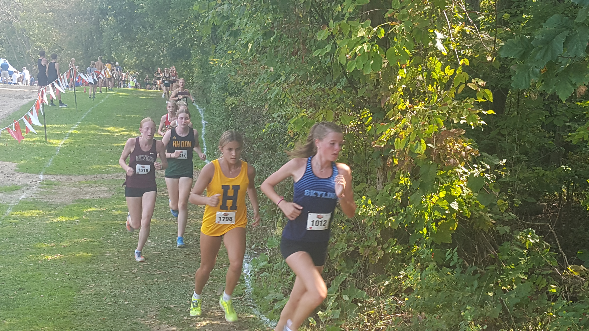
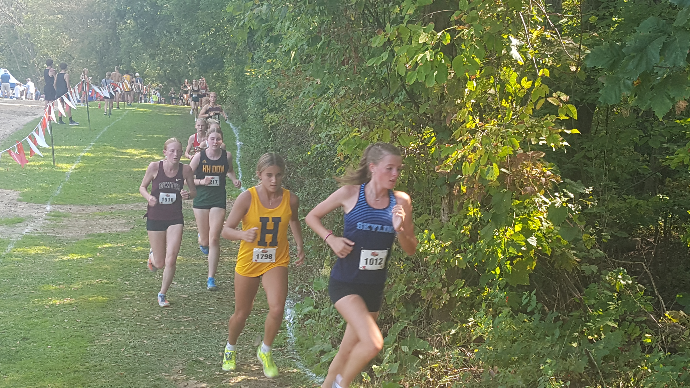

Race Summary
At the SEC Jamboree #1 held on September 10, 2024, at Willow Metropark, the Ann Arbor Skyline Junior Varsity boys team faced off against tough competition and finished 4th overall with a team score of 49 points. The race featured teams from Saline, Pinckney, Chelsea, Dexter, and more.
Key performances for Skyline included sophomore Santiago Valenzuela, who finished 7th overall with a time of 18:55.70, followed closely by senior Henry Strait in 8th place, clocking in at 18:56.20. Senior Jackson Cichewicz crossed the finish line in 11th place with a time of 19:11.80, while sophomore Dylan Hanley placed 12th at 19:13.50. Senior Alex Nemecek also contributed to the team's success, finishing 16th with a season-best time of 19:21.40.
Overall, the team showcased solid performances and consistency, with a tight spread between their top runners, marking a strong showing in the SEC Jamboree.
Team Results
| Place | Team | Score |
|---|---|---|
| 1 | Ypsilanti Lincoln | 19 |
| 2 | Saline | 22 |
| 3 | Pinckney | 33 |
| 4 | Chelsea | 49 |
| 5 | Ann Arbor Skyline | 67 |
| 6 | Dexter | 107 |
| 7 | Ann Arbor Pioneer | 132 |
| 8 | Ann Arbor Huron | 141 |
Individual Results

Athlete Stats
Place: 7.
Time: 18:55.70
Grade: 10

Athlete Stats
Place: 8.
Time: 18:56.20
Grade: 12

Athlete Stats
Place: 11.
Time: 19:11.80
Grade: 12

Athlete Stats
Place: 12.
Time: 19:13.50
Grade: 10
Athlete Stats
Place: 16.
Time: 19:21.40
Grade: 12

Athlete Stats
Place: 22.
Time: 19:58.10
Grade: 10

Athlete Stats
Place: 25.
Time: 20:05.10
Grade: 11

Athlete Stats
Place: 28.
Time: 20:24.10
Grade: 9
Athlete Stats
Place: 32.
Time: 20:36.00
Grade: 12

Athlete Stats
Place: 51.
Time: 21:49.60
Grade: 9

Athlete Stats
Place: 56.
Time: 21:56.30
Grade: 9

Athlete Stats
Place: 59.
Time: 22:00.10
Grade: 10

Athlete Stats
Place: 78.
Time: 22:49.70
Grade: 9
Athlete Stats
Place: 104.
Time: 24:17.30
Grade: 9
Athlete Stats
Place: 107.
Time: 24:29.00
Grade: 9

Athlete Stats
Place: 109.
Time: 24:38.00
Grade: 9

Athlete Stats
Place: 110.
Time: 24:53.70
Grade: 10

Athlete Stats
Place: 113.
Time: 25:25.00
Grade: 12

Athlete Stats
Place: 117.
Time: 26:01.50
Grade: 9
Gallery
View Gallery


 
